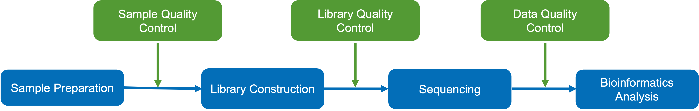

Genome-wide DNA Methylation Analysis Report
| Contract ID | XXXXSCXXXXXXXX |
| Contract Name | WGBS analysis |
| Batch ID | XXXXSCXXXXXXXX-ZXX-JXXX |
| Reference Genome and Version | ncbi_siniperca_chuatsi_gcf_020085105_1_asm2008510v1 |
| Report Time | 2024-05-24 | Warm Tips | Partial results are presented in this report, while full results will be delivered in data release. Hyperlink of results in this report will be only valid in data release, after statement confirmation. |
1 Introduction
DNA methylation is a process by which methyl groups are added to DNA C5 position mediated by DNA methyltransferase (DNMT) (Goldberg et al., 2007). It results in the conversion of the cytosine to 5-methylcytosine (5mC). As an important kind of epigenetic modifications, DNA methylation is widely studied, and it works with histone modifications to play significant roles in regulation of gene expression, chromatin conformation and so on. In vertebrates, DNA methylation typically occurs at CpG dinucleotides. However, there is a large proportion of non-CG methylation (CHH, CHG, H represents A, C, T) in plants.
In general, high DNA methylation could repress gene expression, and demethylation would recover gene expression. DNA methylation participates in many cell activities, including cell differentiation, tissue-specific expression, genomic imprinting, X-chromosome inactivation. Abnormal DNA methylation can cause developmental abnormalities, tumors and other diseases. Thus DNA methylation plays a significant role in understanding gene expression, individual development and the mechanisms of diseases occurance and development.
From DNA samples to final data report, each step of sample QC, library preparation and sequencing may have an impact on the quality and quantity of data output, and the quality of data will directly affect the results of subsequent information analysis. Therefore, obtaining high-quality data is the premise to ensure that bioinformatics analysis is correct, comprehensive and credible. In order to ensure the accuracy and reliability of sequencing data from the beginning, Novogene strictly checks every experimental step and fundamentally ensures the output of high-quality data. Workflow is shown as follows:

Figure 1 Project workflow
2 Library Construction and Sequencing
2.1 Sample Quality Control
Please refer to Novogene’s sample QC report.
2.2 Library Construction, Quality Control and Sequencing
Firstly, the genomic DNA spiked with lambda DNA were fragmented to 200-400 bp. The DNA fragments were bisulfite treated to generate single strand DNA (ssDNA). During the bisulfite conversion, unmethylated cytosine were converted into uracil, while methylated cytosine stayed unchanged. Methylation sequencing adapters were ligated, followed by double strand DNA synthesis. The library was ready after size selection and PCR amplification. The experimental procedures of WGBS library preparation are shown in Figure 2.
Figure 2 Library construction workflow
The library was checked with Qubit and real-time PCR for quantification and bioanalyzer for size distribution detection. Quantified libraries will be pooled and sequenced on Illumina platforms, according to effective library concentration and data amount required.
3 Bioinformatics Analysis Pipeline
The bioinformatic analysis workflow of raw sequencing data is shown as follows：
Figure 3 Bioinformatic analysis workflow
Method details involved in the project are available at method
4 Analysis Results
4.1 Data Quality Control
4.1.1 Raw Data
The original images obtained from high-throughput sequencing platform(eg.illumina) are transformed into sequenced reads by CASAVA base calling, we call these reads as raw data or raw reads which are saved in fastq format. It contains reads information and the corresponding sequencing quality information. These files contain reads information and the corresponding sequencing quality information. Each read has four lines described in details as follows:
@HWI-ST1276:71:C1162ACXX:1:1101:1208:2458 1:N:0:CGATGT
NAAGAACACGTTCGGTCACCTCAGCACACTTGTGAATGTCATGGGATCCAT
+
#55???BBBBB?BA@DEEFFCFFHHFFCFFHHHHHHHFAE0ECFFD/AEHH
| Identifier | Meaning |
|---|---|
| HWI-ST1276 | Instrument – unique identifier of the sequencer |
| 71 | Run number – Run number on instrument |
| C1162ACXX | Flowcell ID - ID of flowcell |
| 1 | LaneNumber - positive integer |
| 1101 | TileNumber - positive integer |
| 1208 | X - x coordinate of the spot. Integer which can be negative |
| 2458 | Y - y coordinate of the spot. Integer which can be negative |
| 1 | ReadNumber - 1 for single reads, 1 or 2 for paired ends |
| N | whether it is filtered - NB: Y if the read is filtered out, not in the delivered fastq files, otherwise N |
| 0 | Control number - 0 when none of the control bits are on. Otherwise it is an even number |
| CGATGT | Illumina index sequences |
Line 1 begins with a '@' character and is followed by the Illumina Sequence Identifiers and an optional description.
Line 2 is the raw sequence read.
Line 3 begins with a '+' character and is optionally followed by the same sequence identifiers and descriptions as in Line 1.
Line 4 encodes the quality values for the sequence in Line 2 and must contain the same number of characters as the bases in the sequence.
Sequencing process itself has the possibility of machine errors. Sequencing error rate distribution can reflect the quality of sequencing data. The quality value of each base in sequence information is stored in the FASTQ file. Quality value of the read represented by Qphred and the “e” represents the sequence error rate, Qphred=-10log10(e). The relationship between sequencing error rate (e) and sequencing base quality value (Qphred) is as following(Base Quality and Phred score relationship with the Illumina CASAVA v1.8 software).
| Phred Score | Error Rate | Correct Rate | Q-score |
|---|---|---|---|
| 10 | 1/10 | 90% | Q10 |
| 20 | 1/100 | 99% | Q20 |
| 30 | 1/1000 | 99.9% | Q30 |
| 40 | 1/10000 | 99.99% | Q40 |
(1) Due to the gradual consumption of reagents during sequencing, the sequencing error rate increases with the length of reads, which is a common feature of the Illumina high-throughput sequencing platform.
(2) For the normal methylation library, the sequencing of read1 and read2 will exhibit a directional characteristic: T content is higher in read 1, and A content is higher in read 2.
4.1.2 FastQC of Raw_reads
The massive raw data high-throughput sequencing technology must be qualified to guarantee the downstream bioinformatics analysis. FastQC is used to generate a QC report to evaluate the raw data quality. Novogene uses FastQC to get a basic statistics of the raw reads, shown in the follows:

Figure 4.1 FastQC of raw reads
4.1.3 Trimming of raw data
To obtain the qualified clean data, we trim the raw reads to filter out the contaminated adapter sequence and low-quality reads. Fastp is used for data trimming and the selection of trimming steps and their associated parameters are shown in the follows (Bolger et al., 2014):
(1) Cut adapter and other illumina-specific sequences from the read;
(2) Cut bases off the start and end of a read, if below a threshold quality of 3 or containing N;
(3) It perform a 4-base sliding window trimming, cutting once the average quality within the window falls below a threshold of 15;
(4) The minimum read length to be kept is specified as 36 nt;
(5) The unpaired reads after trimming is discarded;
(6) Cut 10 bases of the start of a read for single cell methylation and low initial methylation libraries.
Table 4.1 Raw data summary
| LibraryID | Sample name | Raw_reads | Raw_bases(G) | clean_reads | clean_bases(G) | Clean_ratio(%) | Q20(%) | Q30(%) | GC(%) | BS conversion rate(%) |
|---|---|---|---|---|---|---|---|---|---|---|
| A_1 | A_1 | 84849045 | 25.45 | 83942459 | 23.28 | 91.47 | 98.67 | 96.18 | 22.24 | 99.635 |
| A_2 | A_2 | 70621046 | 21.19 | 69744720 | 19.34 | 91.27 | 98.63 | 96.04 | 22.05 | 99.682 |
| A_3 | A_3 | 74921487 | 22.48 | 74159007 | 20.58 | 91.55 | 98.69 | 96.21 | 22.30 | 99.650 |
| B_1 | B_1 | 67329648 | 20.20 | 66538120 | 18.46 | 91.39 | 98.64 | 96.05 | 22.09 | 99.664 |
| B_2 | B_2 | 71585470 | 21.48 | 70790759 | 19.65 | 91.48 | 98.62 | 95.92 | 21.74 | 99.652 |
| B_3 | B_3 | 67161365 | 20.15 | 66457786 | 18.43 | 91.46 | 98.63 | 96.06 | 22.15 | 99.631 |
| C_1 | C_1 | 70080183 | 21.02 | 69261489 | 19.21 | 91.39 | 98.70 | 96.24 | 22.43 | 99.666 |
| C_2 | C_2 | 72047207 | 21.61 | 71211543 | 19.76 | 91.44 | 98.71 | 96.22 | 22.00 | 99.664 |
| C_3 | C_3 | 68654224 | 20.60 | 67813395 | 18.83 | 91.41 | 98.71 | 96.26 | 22.12 | 99.674 |
| D_1 | D_1 | 70678225 | 21.20 | 69962427 | 19.41 | 91.56 | 98.70 | 96.28 | 22.52 | 99.639 |
| D_2 | D_2 | 69267298 | 20.78 | 68554534 | 19.02 | 91.53 | 98.69 | 96.22 | 22.46 | 99.665 |
| D_3 | D_3 | 74169101 | 22.25 | 73337334 | 20.36 | 91.51 | 98.65 | 96.08 | 22.23 | 99.639 |
-
(1) LibraryID: name of library
(2) Sample name: sample name
(3) Raw Reads: the read counts of raw data
(4) Raw Bases(G): read counts of raw data multiplied by read length, saved in G unit
(5) Clean reads: the sequencing read counts after trimming filtering
(6) Clean bases(G): clean read counts multiplied by read length, saved in G unit
(7) Clean ratio(%): the proportion of clean bases in raw bases
(8) Clean_Q20(%): the proportion of bases with quality score more than 20
(9) Clean_Q30(%): the proportion of bases with quality score more than 20
(10) GC Content(%): the proportion of G and C in all the bases
(11) BS conversion rate(%): the Bisulfite conversion rate for C converting to T
4.1.4 FastQC of Clean_reads
FastQC is also performed on the clean data obtained from trimming, the results as shown:
Figure 4.2 FastQC of clean reads
-
(1) Top-left: horizontal axis represents position in read (bp), vertical axis represents quality scores. Different colors represent different quality range;
(2) Top-middle: horizontal axis represents position in read (bp), vertical axis represents base percentage;
(3) Top-right: the distribution of read length;
(4) Bottom-left: GC distribution over all sequences. Red line is the actual GC content distribution, blue line is the theoretical distribution;
(5) Bottom-middle: N-ratio across all bases;
(6) Bottom-right: x-axis is the sequence duplication level. y-axis is the percent of the deduplicated reads.
Result: QualityControl
4.2 Alignment to reference genome
Bismark software (Krueger et al., 2011) is used to perform alignments of bisulfite-treated reads to a reference genome(Langmead et al., 2012). C is transformed to T and G is transformed to A (reverse complementary) in sequence reads and reference genome via Bismark, and then these sequencing reads are aligned to similarly converted versions of the genome separately.
The process of Bismark performing alignment is as follows:
(1) Perform C-to-T and G-to-A conversions for both sequencing reads and a reference genome;
(2) Align converted reads to the converted genome;
(3) Choose the best alignment from the parallel four alignment processes and consider it as the final result.

Figure 4.3 Bismark Alignment Strategy
Genomic fragment: shown in italics; Sequence after bisulfite treatment: shown in Roman letters
4.2.1 Overview of Mapping Status
The summary of mapping result as follows:
Table 4.2 Overview of mapping status
| Samples | Total reads | Mapped reads | Mapping rate(%) | Duplication rate(%) |
|---|---|---|---|---|
| A_1 | 83942459 | 75878740 | 90.39 | 88.54 |
| A_2 | 69744720 | 62863498 | 90.13 | 88.18 |
| A_3 | 74159007 | 67588467 | 91.14 | 88.86 |
| B_1 | 66538120 | 59875252 | 89.99 | 88.01 |
| B_2 | 70790759 | 63877475 | 90.23 | 88.59 |
| B_3 | 66457786 | 59832860 | 90.03 | 88.35 |
| C_1 | 69261489 | 62628112 | 90.42 | 88.50 |
| C_2 | 71211543 | 64339595 | 90.35 | 88.39 |
| C_3 | 67813395 | 61575266 | 90.80 | 88.49 |
| D_1 | 69962427 | 63296698 | 90.47 | 88.32 |
| D_2 | 68554534 | 62391590 | 91.01 | 89.08 |
| D_3 | 73337334 | 66441403 | 90.60 | 88.81 |
-
(1) Samples: Sample name
(2) Total reads: The filtered clean reads used for mapping
(3) Mapped reads: The uniquely mapped reads
(4) Mapping rate (%): The precentage of uniquely mapped reads in the filtered clean reads used for mapping
(5) Duplication rate (%): The percentage of duplication reads in the filtered clean reads used for mapping
4.2.2 Read Coverage and Sequencing Depth
To fully determine the Genome-wide methylation status, a minimum 30x coverage is recommended by NIH Roadmap Epigenomics Project (http://www.roadmapepigenomics.org/protocols). And biological replicates influence more than the coverage. So when there exist biological replicates, a minimum 20x coverage for each replicate is enough. Besides, the Cytosine coverage is also another good indicator for methylation analysis. Genome coverage and Cytosine coverage are summarized in the follows:
4.2.2.1 Distribution of genome coverage
Single-base read coverage (the total read amount which covers this specified base) of the genome is calculated to get the genome coverage distribution and cumulative genome coverage distribution of read coverage.
Table 4.3 genome coverage summary
| Samples | sites_num | sites_covgMean | sites_numCovg1 | sites_numCovg5 | sites_numCovg10 |
|---|---|---|---|---|---|
| A_1 | 707102899 | 21.31 | 98.37 | 96.67 | 92.72 |
| A_2 | 706586314 | 17.17 | 98.30 | 96.04 | 88.64 |
| A_3 | 706457889 | 19.08 | 98.28 | 96.29 | 90.84 |
| B_1 | 704411014 | 16.47 | 98.00 | 95.22 | 86.80 |
| B_2 | 706718621 | 16.89 | 98.32 | 95.96 | 88.06 |
| B_3 | 706002669 | 17.07 | 98.22 | 95.71 | 87.33 |
| C_1 | 706359832 | 18.72 | 98.27 | 96.25 | 90.47 |
| C_2 | 706471056 | 18.41 | 98.28 | 96.20 | 90.16 |
| C_3 | 706000158 | 17.88 | 98.22 | 95.98 | 89.36 |
| D_1 | 704329738 | 18.05 | 97.98 | 95.47 | 88.78 |
| D_2 | 706370560 | 18.49 | 98.27 | 96.05 | 89.58 |
| D_3 | 706263603 | 18.69 | 98.25 | 96.26 | 90.80 |
-
(1) Samples: sample name
(2) sites_num: the total detected genome base amount
(3) sites_covgMean: the average base coverage of the genome
(4) sites_numCovg1: the percentage of bases with a minimum 1x coverage of the genome
(5) sites_numCovg5: the percentage of bases with a minimum 5x coverage of the genome
(6) sites_numCovg10: the percentage of bases with a minimum 10x coverage of the genome
Figure 4.4 Distribution of genome coverage of all samples
Top: x-axis shows the coverage depth, y-axis shows the fraction of bases with the corresponding coverge depth in the genome.
Bottom: x-axis shows the coverage depth, y-axis shows the accumulative fraction of bases above corresponding depth in the genome.
Different colors denote different samples.
4.2.2.2 Distribution of chromosome depth and coverage
The read amount mapped on each chromosome is calculated to get the mean sequencing depth and coverage depth of each chromosome.

Figure 4.5 The distribution of reads on each chromosome
The x-axis denotes the chromosome; the left y-axis denotes the average squencing depth of each chromosome, the right y-axis denotes the read coverage percentage of each chromosome.
4.2.3 Coverage depth of cytosine sites
The coverage depth of Cytosine is a standard for sequencing depth. The coverage depth of each CX context(CpG, CHH, CHG, H represents A, C, T) is shown as follows.
The coverage of Cytosine in each CX context is calculated (the read amount supporting the context) to get the accumulative coverage distribution diagrams.
Table 4.4 The coverage statistics of cytosine in different context
| sample | C_covgMean | C(Mb) | CG(Mb) | CHG(Mb) | CHH(Mb) | MeanC(%) | MeanCG(%) | MeanCHG(%) | MeanCHH(%) |
|---|---|---|---|---|---|---|---|---|---|
| A_1 | 9.1 | 2627.1 | 200.9 | 630.6 | 1795.6 | 6.06 | 74.58 | 0.38 | 0.39 |
| A_2 | 7.4 | 2157.9 | 162.7 | 512.4 | 1482.9 | 6.15 | 77.22 | 0.35 | 0.36 |
| A_3 | 8.1 | 2354.6 | 181.0 | 564.8 | 1608.8 | 6.22 | 76.38 | 0.36 | 0.38 |
| B_1 | 7.1 | 2062.3 | 156.3 | 491.0 | 1415.0 | 6.19 | 77.06 | 0.37 | 0.38 |
| B_2 | 7.5 | 2161.5 | 159.2 | 509.2 | 1493.1 | 6.01 | 76.74 | 0.38 | 0.39 |
| B_3 | 7.4 | 2158.2 | 164.0 | 516.1 | 1478.1 | 6.21 | 76.81 | 0.39 | 0.41 |
| C_1 | 7.8 | 2275.1 | 177.1 | 548.3 | 1549.8 | 6.27 | 75.96 | 0.38 | 0.39 |
| C_2 | 7.9 | 2284.3 | 171.7 | 542.3 | 1570.2 | 6.10 | 76.39 | 0.38 | 0.39 |
| C_3 | 7.6 | 2200.4 | 168.0 | 522.9 | 1509.5 | 6.21 | 76.75 | 0.37 | 0.38 |
| D_1 | 7.6 | 2206.2 | 172.7 | 533.5 | 1500.1 | 6.37 | 76.65 | 0.40 | 0.41 |
| D_2 | 7.9 | 2284.0 | 177.3 | 552.9 | 1553.8 | 6.31 | 76.84 | 0.37 | 0.38 |
| D_3 | 8.0 | 2327.6 | 178.7 | 556.6 | 1592.3 | 6.31 | 77.12 | 0.41 | 0.43 |
-
(1) sample: sample name
(2) C_covgMean: The mean coverage of all the cytosine sites
(3) C(Mb): The base number mapped onto the genome cytosine sites
(5) CG(Mb): The base number mapped onto the genome CG-context cytosine sites
(6) CHG(Mb): The base number mapped onto the genome CHG-context cytosine sites
(7) CHH(Mb): The base number mapped onto the genome CHH-context cytosine sites
(8) MeanC: The average methylation level of all the genome cytosine sites
(9) MeanCG: The average methylation level of all the genome CG-context cytosine sites
(10) MeanCHG: The average methylation level of all the genome CHG-context cytosine sites
(11) MeanCHH: The average methylation level of all the genome CHH-context cytosine sites

Figure 4.6 The accumulative coverage distribution of cytosines in each context
The x-axis shows the coverage depth of Cytosine sites, y-axis shows the accumulative fraction of cytosine sites above corresponding coverage depth.
Different colors denotes different contexts.
Result: Mapping
4.3 Identification of Methylated Cytosines
After the alignment, site calling, and evaluation of genomic coverage/depth and C site coverage/depth of methylation data, C-site analysis of methylation is processed as follows:
4.3.1. Detection of methylated sites
After alignment, Bismark (Krueger et al., 2011) is used to identify methyalted sites. Firstly, PCR duplicates must be removed and then methylation state of cytosines can be identified by comparison of reads base and the reference genome base at the same position. If the read base is C, it suggests that this cytosine is methylated; otherwise, it is unmethylated. Algorithm of Bismark identifying methylation sites is as follows:

The PE reads overlap portion may cause some bias in the mC site identification results (Gao et al., 2015). Hence, we select no_overlap in bismark_methylation_extractor, and remain read1 information when dealing with PE reads overlap area (Wang et al., 2014; Krueger et al., 2011).
Besides, the bisulfite conversion rate may also influence the accuracy of methylation identification. By adding Lambda genome DNA in the library as the negative control, we calculated the BS conversion rate to evaluate the reliability of the methylation level. In next generation sequencing, the sequencing depth of each site is different, which cause the different ratio of methylated and unmethylated sites. However, the probability of each methylated site should be subjected to the binomial distribution. Binomial distribution is the discrete probability distribution of the number of successes in a sequence of n independent experiments, is a widely used probability distribution of discrete random variables. In analysis process, in order to identify the true methylated sites, methylated and unmethylated counts at each site from Bismark output is tested by binomial distribution. Assuming the number of methylated cytosine is x in a certain site, where the read coverage is n and BS un-conversion rate is p, so the reliability of x methylated cytosine needs to be tested in above conditions. A set of thresholds are set in analysis process to find accurate methylated sites (Habibi et al., 2013; Gifford et al., 2013): (1) the sequencing depth is greater than or equal to five; (2) q-value less than or equal to 0.01.
For the methylated sites, the methylation level is calculated using the following formula: ML=mC/(mC+umC). ML represents the methylation level, and mC and umC represent the number of methylated and unmethylated cytosines, respectively. The results of methylation level of cytosine are shown in follows:
Table 4.5 Methylation Level of Cytosines
| Chromosome | Position | Strand | Methylation Level | mC count | umC count | Pvalue | Corrected pvalue | Context |
|---|---|---|---|---|---|---|---|---|
| NC_015822.1 | 442 | + | 0.050 | 38 | 715 | 4.9623e-31 | 4.2335e-30 | CG |
| NC_015822.1 | 644 | + | 0.051 | 33 | 620 | 3.4896e-27 | 1.6618e-26 | CG |
| NC_015822.1 | 690 | + | 0.051 | 31 | 581 | 1.1530e-25 | 4.6771e-25 | CG |
| NC_015822.1 | 763 | - | 0.061 | 22 | 336 | 1.8489e-20 | 4.2345e-20 | CG |
| NC_015822.1 | 896 | - | 0.056 | 27 | 455 | 1.0700e-23 | 3.3923e-23 | CG |
| NC_015822.1 | 957 | - | 0.054 | 23 | 400 | 3.9326e-20 | 8.2422e-20 | CG |
(1) Chromosome: chromosome ID
(2) Position: cytosine coordinate at genome
(3) Strand: strand information of the cytosine
(4) Methylation level: ML=mC/(mC+umC)
(5) mC count: the number of methylated cytosines
(6) umC count: the number of unmethylated cytosines
(7) Pvalue: p value of binomial distribution test
(8) Corrected pvalue: adjusted p value
(9) Context: contexts in which the cytosine is located
4.3.2 Summary of Genomic Methylation Profile
In different sequence context (CpG, CHH, CHG), percentages of methylated cytosines in their contexts are shown in the following table.
Table 4.6 Summary of Genomic Methylation Profile
| Samples | mC percent(%) | mCpG percent(%) | mCHG percent(%) | mCHH percent(%) |
|---|---|---|---|---|
| A_1 | 5.74% | 76.41% | 0.02% | 0.03% |
| A_2 | 5.24% | 69.79% | 0.02% | 0.02% |
| A_3 | 5.46% | 72.8% | 0.02% | 0.02% |
| B_1 | 5.08% | 67.65% | 0.02% | 0.02% |
| B_2 | 5.18% | 68.98% | 0.02% | 0.02% |
| B_3 | 5.14% | 68.53% | 0.02% | 0.02% |
| C_1 | 5.4% | 71.89% | 0.03% | 0.03% |
| C_2 | 5.36% | 71.32% | 0.03% | 0.03% |
| C_3 | 5.27% | 70.19% | 0.02% | 0.02% |
| D_1 | 5.27% | 70.23% | 0.02% | 0.02% |
| D_2 | 5.34% | 71.03% | 0.03% | 0.03% |
| D_3 | 5.47% | 72.82% | 0.03% | 0.03% |
-
(1) Samples: sample name
(2) mC percent(%): percent of methylated cytosines in all of the genomic cytosines
(3) mCpG percent(%): percent of methylated cytosines in CG regions
(4) mCHG percent(%): percent of methylated cytosines in CHG regions
(5) mCHH percent(%): percent of methylated cytosines in CHH regions
The percentage of methylated cytosines in each CX content and the total methylated cytosines are shown in following diagrams:


Figure 4.7 Classification of methylated cytosines
Different colours represent methylated cytosines in different contexts, the area represents the percentage of methylated cytosines in the corresponding context.
The percentage of methylated cytosines in each CX content and the total methylated cytosines on each chromosome is calculated, and the result is shown in Figure 4.8
Figure 4.8 Distribution of Average Methylation Level in Chromosomes
The x-axis represents the chromosomes ID, and the y-axis represents the average methylation level in corresponding chromosomes. Different colours stand for different contexts.
4.3.3 Methylation analysis of C sites
For the identified methylated sites, the methylation level is calculate as: ML=mC/(mC+umC), where ML is the methylation level. The distribution of methylation level in each context is shown in follows.
Figure 4.9 The distribution of methylation level in each context
The x-axis is methylation level, the y-axis is the percentage of methylated sites in all sits. Colors donates different context (count methylation level as 0% if < 5%, count as 10% if > 5% and < 15%, and so on. Count as 100% if > 95%)
4.3.4 Visualization of mapping results
The bw format files containing mapping results, corresponding reference genome and gene annotation files are provided. IGV (Integrative Genomics Viewer) software is recommended for visualization of bw file (Robinson et al., 2011; Thorvaldsdóttir et al., 2013). The advantages of IGV include:
(1) display the positions of single or multiple reads in the reference genome, as well as reads distribution in annotated exons, introns or intergenic regions in adjustable scale;
(2) display reads abundance in different regions to surrogate the methylation level of different regions in adjustable scale;
(3) provide annotation information of both genes and splicing isoforms and other related annotation information;
(4) display annotation downloaded from remote server or imported from local machines or both.

Figure 4.10 IGV Visualization

Figure 4.11 The IGV visualization can be saved as SVG format and edited using AI
Result: MethylationStat
4.4. Methylation analysis
The methylation analysis for single sample includes: overall methylation density, methylation density on chromosome, methylation distribution on functional genetic region, methylation distribution on up/downstream 2kb and gene body. These analysis can be used to construct a species methylation profile. The results are in follows:
4.4.1 Single sample Methylation analysis
The whole genome is divided into sub-bins by 10kb. We analyze the C sites in each context for each sample (or each group, combine the samples if the biological replicates > 5). Results are shown in follows.
Figure 4.12 methylation level distribution in whole genome
The x-axis is the name of each sample/group, the y-axis is the methylation level. Take 10kb as a bin, the width of each violin represents the number of bin in this methylation level.
The whole genome is divided into sub-bins by 10kb. We analyze methylation density of the C sites in each context for each sample (or each group, combine the samples if the biological replicates > 5). Results are shown in follows.
Figure 4.13 methylation level density in whole genome
The x-axis is the name of each sample/group, the y-axis is the methylation density. Take 10kb as a bin, the width of each violin represents the number of bins in this methylation density
4.4.2 Circos plots for methylation density
Circos plot is used to represent the methylation density on chromosome (Zhong et al., 2013; Krzywinski et al., 2009).
Figure 4.14 Circos plots for methylation density on chromosome
Circos plot represents (from outside to inside):1. The heatmap for methylation density in CG context 2. The heatmap for methylation density in CHG context 3. The heatmap for methylation density in CHH context 4. The heatmap for TE（repeat elements）rate 5. The heatmap for gene density
4.4.3 Circos plots for methylation level density
The max/min methylation density in each bin in each context.(when plotting, the max methylation density is calculated as 100%, others are calculated as the percentage of the max one, which is similar in previous study (Lister et al., 2009; Krzywinski et al., 2009).
Table 4.7 The max/min methylation density in each bin
| Samples | CG_level_max | CG_level_min | CG_density_max | CG_density_min | CHG_level_max | CHG_level_min | CHG_density_max | CHG_density_min | CHH_level_max | CHH_level_min | CHH_density_max | CHH_density_min |
|---|---|---|---|---|---|---|---|---|---|---|---|---|
| A_1 | 87.24 | 26.17 | 99.66 | 39.25 | 0.54 | 0.32 | 0.29 | 0 | 0.54 | 0.34 | 0.32 | 0 |
| A_2 | 90.03 | 28.63 | 99.82 | 39.33 | 0.58 | 0.29 | 0.27 | 0 | 0.51 | 0.31 | 0.31 | 0 |
| A_3 | 90.61 | 26.43 | 99.66 | 37.13 | 0.57 | 0.31 | 0.2 | 0 | 0.54 | 0.33 | 0.22 | 0 |
| B_1 | 90.17 | 28.56 | 99.76 | 38.13 | 0.63 | 0.31 | 0.36 | 0 | 0.67 | 0.33 | 0.4 | 0 |
| B_2 | 89.22 | 28.16 | 99.76 | 39.65 | 0.55 | 0.32 | 0.26 | 0 | 0.56 | 0.33 | 0.31 | 0 |
| B_3 | 89.47 | 26.47 | 99.75 | 36.35 | 0.54 | 0.34 | 0.19 | 0 | 0.56 | 0.36 | 0.21 | 0 |
| C_1 | 88.18 | 26.59 | 99.79 | 35.69 | 0.64 | 0.31 | 0.32 | 0 | 0.57 | 0.32 | 0.34 | 0 |
| C_2 | 87.95 | 26.87 | 99.79 | 36.63 | 0.64 | 0.32 | 0.34 | 0 | 0.56 | 0.33 | 0.35 | 0 |
| C_3 | 89.27 | 27.08 | 99.74 | 36.86 | 0.64 | 0.3 | 0.24 | 0 | 0.56 | 0.32 | 0.23 | 0 |
| D_1 | 88.46 | 25.75 | 99.79 | 34.27 | 0.65 | 0.33 | 0.34 | 0 | 0.71 | 0.34 | 0.4 | 0 |
| D_2 | 88.65 | 25.51 | 99.78 | 35.44 | 0.67 | 0.31 | 0.34 | 0 | 0.57 | 0.31 | 0.36 | 0 |
| D_3 | 88.52 | 27.15 | 99.82 | 35.86 | 0.68 | 0.34 | 0.25 | 0 | 0.59 | 0.35 | 0.24 | 0 |
-
(1) Samples: sample name
(2) CG_level_max：max value of methylation level in each bin in CG context
(3) CG_level_min：min value of methylation level in each bin in CG context
(4) CG_density_max：max value of methylation density in each bin in CG context
(5) CG_density_min：min value of methylation density in each bin in CG context
(6) CHG_level_max: max value of methylation level in each bin in CHG context
(7) CHG_level_min: min value of methylation level in each bin in CHG context
(8) CHG_density_max：max value of methylation density in each bin in CHG context
(9) CHG_density_min：min value of methylation density in each bin in CHG context
(10) CHH_level_max：max value of methylation level in each bin in CHH context
(11) CHH_level_min：min value of methylation level in each bin in CHH context
(12) CHH_density_max：max value of methylation density in each bin in CHH context
(13) CHH_density_min：min value of methylation density in each bin in CHH context

Figure 4.15 Circos plots for methylation level densit
Circos plot represents (from outside to inside): 1. Line chart for methylation level (red donates CG context, blue donates CHG context, purple donates CHH context) 2. The heatmap for gene density 3. Line chart for methylation density (red donates CG context, blue donates CHG context, purple donates CHH context)
4.4.4 Methylation Level of Genomic Features
The average methylated level in different cytosine contexts is calculated in different functional genomic regions such as promoter, exon, intron, repeat, CGI, CGI shore, CGI shelves、open sea(Promoter region is the 2kb region above TTS, 5’UTR, Exon and Intron are obtained from the Ensembl structure annotation files), the average methylation level distribution of all samples in genomic functional regions are shown in follows:
Figure 4.16 Methylation level distribution of all samples in CpG island
Figure 4.17 Methylation level distribution of all samples in genomic features
The x-axis represents different genomic elements, and the y-axis represents methylation level. The various functional areas of each gene are divided into 20 bins, and average methylation level within each bin region is calculated. Different colours stand for different contexts (CpG, CHG, CHH).
4.4.5 Methylation Level of up/downstream
The methylation level from upstream 2kb to downstream 2kb and the genebody(from TSS to TES) of each C context is summarized. The distribution of methylation level from TSS to TES is shown as follows :

Figure 4.18 methylation level from upstream 2kb to downstream 2kb
The x-axis is each bin of upstream 2kb, genebody, and downstream 2kb. The y-axis is the methylation level. Color donates different sequence context (CpG, CHG, CHH).
Result: Sample Methylation Analysis
4.5. Correlation and cluster heatmap
In order to ensure the reproducibility of the results, it is often necessary to design biological duplication in the experiment. NIH Roadmap Epigenomics Project suggested that two or more biological replicates should be used in the design of the methylation experiment. There are two main uses for biological duplication: one is to prove that the biological experiments involved are repeatable and not very variable, and the other is to ensure that differential genetic analysis have more reliable results.
4.5.1 Correlation and PCA analysis
Correlation and principal component analysis (PCA) will be conducted to ensure the reproducibility of the analytical results. Correlation analysis was performed when the sample number is greater than 2, and PCA was performed when the sample number is greater than 6. (The PCA results will not be displayed when the number of samples is less than 6)
4.5.1.1 Correlation analysis
The correlation of methylation levels between samples is an important indicator to test the reliability of the experiment and whether the sample selection is reasonable. The closer the correlation coefficient is to 1, the higher the similarity in the methylation pattern between samples.
The whole genome is split by 2kb sub-bin. We provide the methylation level for each bin and pearson correlation analysis (Smallwood et al., 2014).
Figure 4.19 Correlation analysis
Heatmap: heatmap represents the correlation between samples. R2:the square of pearson correlation, which is calculate by different context(CG、CHG、CHH)
4.5.1.2 PCA
Principal component analysis (PCA) is a statistical procedure that uses an orthogonal transformation to convert a set of observations of possibly correlated variables (entities each of which takes on various numerical values) into a set of values of linearly uncorrelated variables called principal components.
The core idea of PCA is to reduce the dimension of the data under the premise of keeping the data as much as possible.It is conceivable that the data set is a group of points in the multi-dimensional space. When the relative spatial position of the group is kept unchanged, the data is rotated to a new coordinate system (the axes are the PCs), so that the points are new. The coordinate (projection) on the coordinate axis has the largest variance, and the axis with the largest projection variance is PC1, followed by PC2.
The result of PCA analysis using correlation analysis data is shown in follows:
Figure 4.20 PCA analysis of methylation between samples (distinguishing CG, CHG, CHH）
Hierarchical clustering plot and PCA plot for Principal component 1 and Principal component 2 for CG/CHG/CHH context
4.5.2 Heatmap analysis of functional regions
The heatmap analysis of the methylation level of functional regions between samples can reflect the degree of agreement of the methylation level distribution of each sample in the gene function region.
Data of this analysis comes from Methylation Level of Genomic Features for single sample.

Figure 4.21 Heatmap analysis of gene functional region methylation levels in different sequence environments of different samples
Result: Sample Methylation Analysis
4.6. Methylation level in comparison group
For most studies, we focus on the differential methylation analysis between samples. The methylation analysis for comparison groups includes: overall methylation density, methylation density on chromosome, methylation distribution on functional genetic region, methylation distribution on up/downstream 2kb and gene body. (combined the information if there are biological replicates (Song et al., 2013).
4.6.1 Circos plot for differential methylation level
4.6.1 Circos plot for differential methylation level
Circus plot can help reflect the differences of combined methylation level in comparison groups (Figure 4.22)(Kulis et al., 2012; Krzywinski et al., 2009).
Figure 4.22 Circos plot of combined methylation level in comparison groups
Circos plot represents (from outside to inside): 1. Methylation level for sample1 (group1), color donates the methylation level. 2. Methylation level difference between groups, heatmap shows the difference 3. methylation level for sample(group)2, color donates the methylation level.
4.6.2 Methylation level of functional gene region
The methylated level in different cytosine contexts is calculated in different functional genomic regions such as promoter, exon, intron, repeat, CGI, CGI shore, CGI shelves、open sea(Promoter region is the 2kb region above TTS, 5’UTR, Exon and Intron are obtained from the Ensembl structure annotation files), the average methylation level distribution of comparison groups in genomic functional regions are shown in follows:
1. Methylation level distribution at functional genetic elements in three context (CG,CHG,CHH)
Figure 4.23 An overview of methylation level distribution at CpG island in three context (CG,CHG,CHH) , using two labels
Figure 4.24 An overview of methylation level distribution at functional genetic elements in three context (CG,CHG,CHH) , using two labels
The x-axis is the functional genetic elements，the y-axis is the methylation level. After combining the samples with biological repeats (if have), each functional region is divided into 20 bins and calculate the methylation level of each bin. Color donates group, line donates different context (CpG, CHG, CHH). There is a big difference between CG context and non-CG context for most species. Therefore, two labels are used in this plot: the left label is methylation level in non-CG context; the right label is methylation level in CG context.
2. Methylation level distribution at functional genetic elements in each context (CG,CHG,CHH)

Figure 4.25 methylation level distribution at CpG island in each context (CG,CHG,CHH)
Figure 4.26 methylation level distribution at functional genetic elements in each context (CG,CHG,CHH)
The x-axis is the functional genetic elements，the y-axis is the methylation level. After combining the samples with biological repeats (if have), each functional region is divided into 20 bins and methylation level is calculated in each bin. Color donates group
4.6.3 Methylation level of up/downstream 2kb and gene body.
We analyze the methylation level from upstream 2kb to downstream 2kb and the gene body (from TSS to TES) in C context and each C context for each compare group.
1. Methylation level distribution at up/downstream 2kb and gene body in all three context (CG, CHG, CHH)
Figure 4.27 An overview of methylation level distribution at up/downstream 2kb and gene body in three context (CG,CHG,CHH) , using two labels
The x-axis is the functional genetic elements，the y-axis is the methylation level. After combining the samples with biological repeats (if have), each region is divided into 50 bins and methylation level is calculate in each bin. Color donates group, line donates different context (CpG, CHG, CHH). There is a big difference between CG context and non-CG context for most species. Therefore, two labels are used in this plot: the left label is methylation level in non-CG context, the right label is methylation level in CG context.
2. Methylation level distribution at up/downstream 2kb and gene body in each context (CG,CHG,CHH)
Figure 4.28 An overview of methylation level distribution at up/downstream 2kb and gene body in each context (CG,CHG,CHH)
The x-axis is the functional genetic elements，the y-axis is the methylation level. After combining the samples with biological repeats (if have), each region is divided into 50 bins and methylation level is calculate in each bin. Color donates group.
Result: Compare Methylation Analysis
4.7. Differentially methylated regions analysis
The methylation status may vary among the genomes of various samples (tissue, cells, individuals, etc.). The differentially methylated regions involved could be participated in the transcriptional regulation of genes. Identification of differential methylation can be used to examine differences in epigenetics in different tissues. It is well known that DNA methylation is involved in cell differentiation and proliferation, and many DMRs have been found in embryo reprogramming (R-DMRs) and developmental stages (D-DMRs) (Reik et al., 2001; Meissner et al., 2008; Doi et al., 2009). Cancer also exhibits overall methylation loss and hypermethylation of localized areas such as CpG islands in the promoter region of the tumor suppressor gene compared to normal samples (Irizarry et al., 2009).
4.7.1 DMR analysis
DSS-single(DSS) is used to analyze differentially methylated regions (DMR) in the pipeline. Considering the spatial correlation of DMR, smoothing is applied when conducting the analysis. (Feng et al., 2014; Wu et al., 2015; Park et al., 2016).
The factors considered in DSS analysis:
1. The spatial correlation of the methylation site: appropriate use of information on nearby methylation sites can improve the assessment of methylation levels at each site and the identification of DMR; Use a smooth method to identify relatively long DMRs.
2. The read depth of the sites: the sequencing depth of the site can improve the accuracy and the statistical values of DMR identification.
3. The variance among biological replicates: Ignoring differences in biological duplication may lead to false positives. DSS software is based on beta binomial distribution, taking into account heterogeneity between biological replicates. When studying samples without replicated, DSS uses smoothing to nearby sites as biological repeat sites for analysis (DSS analysis pipeline and parameters can refer to README.txt in results and references.
DMR analysis results using DSS is shown in follows:
Table 4.8 DMR analysis results
| chr | start | end | DMR_length | C_number | group1_meanMethy | group2_meanMethy | diff.Methy | areaStat | C_context |
|---|---|---|---|---|---|---|---|---|---|
| NC_015822.1 | 10374 | 10528 | 155 | 59 | 0.0364438286661494 | 0.0136788963159007 | 0.0227649323502486 | 272.337270039294 | CHH |
| NC_015822.1 | 13504 | 13701 | 198 | 78 | 0.041943059928629 | 0.0148885568524293 | 0.0270545030761997 | 400.358714006441 | CHH |
| NC_058042.1 | 42476 | 42566 | 91 | 12 | 0.62189533850405 | 0.400197547289258 | 0.221697791214791 | 61.4403302854196 | CG |
| NC_058042.1 | 385368 | 385624 | 257 | 41 | 0.643318806466852 | 0.929995413569067 | -0.286676607102215 | -288.759565534898 | CG |
-
（1）chr: chromosome ID
（2）start: start position of DMR
（3）end: end position of DMR
（4）DMR_length: length of DMR
（5）C_number: number of sites inside DMR
（6）group1_meanMethy: average methylation level in case group
（7）group2_meanMethy: average methylation level in control group
（8）diff.Methy: difference of methylation level between two groups
（9）areaStat: statistical value to perform the feneral difference between two group
（10) C_context: sequence context
PS: DMR.all.result.xls: all DMR identified by DSS software. If the number of DMR in all context is higher than 10000, the top 10000 DMR are selected for further analysis.
4.7.2 DMR results annotation
Annotation to DMR regions such as promoter，exon，intron，CGI，CGI shore，repeat，TSS，TES; and add information of gene name if DMR is in the gene region.
Table 4.9 DMR annotation
| chr | start | end | DMR_length | C_number | group1_meanMethy | group2_meanMethy | diff.Methy | areaStat | C_context | regionID | region | Gene name | Gene description |
|---|---|---|---|---|---|---|---|---|---|---|---|---|---|
| NC_015822.1 | 10374 | 10528 | 155 | 59 | 0.0364438286661494 | 0.0136788963159007 | 0.0227649323502486 | 272.337270039294 | CHH | rna-NC_015822_1_11737_11805 | promoter | rna-NC_015822_1_11737_11805 | tRNA-His && - && - |
| NC_015822.1 | 10374 | 10528 | 155 | 59 | 0.0364438286661494 | 0.0136788963159007 | 0.0227649323502486 | 272.337270039294 | CHH | rna-NC_015822_1_11806_11875 | promoter | rna-NC_015822_1_11806_11875 | tRNA-Ser && - && - |
| NC_015822.1 | 10374 | 10528 | 155 | 59 | 0.0364438286661494 | 0.0136788963159007 | 0.0227649323502486 | 272.337270039294 | CHH | rna-NC_015822_1_11878_11950 | promoter | rna-NC_015822_1_11878_11950 | tRNA-Leu && - && - |
| NC_015822.1 | 10374 | 10528 | 155 | 59 | 0.0364438286661494 | 0.0136788963159007 | 0.0227649323502486 | 272.337270039294 | CHH | 10965118 | promoter | ND5 | - && sp|Q9ZZM3|NU5M_SALSA NADH-ubiquinone oxidoreductase chain 5 OS=Salmo salar OX=8030 GN=MT-ND5 PE=3 SV=1 && PF00361:Proton-conducting membrane transporter |
| NC_015822.1 | 10374 | 10528 | 155 | 59 | 0.0364438286661494 | 0.0136788963159007 | 0.0227649323502486 | 272.337270039294 | CHH | 10965119 | exon | ND4 | - && sp|Q4JQH8|NU4M_TETNG NADH-ubiquinone oxidoreductase chain 4 OS=Tetraodon nigroviridis OX=99883 GN=MT-ND4 PE=3 SV=1 && - |
-
（1）chr: chromosome ID
（2）start: start position of DMR
（3）end: end position of DMR
（4）DMR_length: length of DMR
（5）C_number: number of sites inside DMR
（6）group1_meanMethy: average methylation level in case group
（7）group2_neanMethy: average methylation level in control group
（8）diff.Methy: difference of methylation level between two groups
（9）areaStat: statistical value to perform the feneral difference between two groups
（10) C_context: sequence context
（11) regionID: region ID（could be gene ID，repeat ID，CGI position）
（12) region: region context
（13) Gene name: gene name or related description if gene ID related region
（14) Gene description: gene description
Venn plot are drawn for DMR target gene (from TSS to TES) in three context(CG,CHG,CHH)
Figure 4.29 Venn plot for DMR target gene in three contexts (CG, CHG, CHH)
The legend is the context type; the number means the number of genes in that context or in that overlapped context. There are specific gene lists in the results.
4.7.3 DMR length distribution
The following plot shows DMR length distribution. Previous study indicates that DMR lengths range from hundreds to thousands bp, which follows a normal distribution model (Sun et al., 2014; Wen et al., 2016).
Plot for DMR length distribution in three contexts (CG, CHG, CHH):
Figure 4.30 DMR length distribution in three contexts (CG, CHG, CHH)
The x-axis represents DMR Length, and y-axis represents DMR counts with corresponding length
4.7.4 Violin plot for DMR methylation level
For DMR methylation levels, the DSS software gives the average methylation level of the differentially methylated region to draw the methylation level distribution violin boxplot.
Violin plot for DMR methylation level in three contexts (CG, CHG, CHH):
Figure 4.31 Violin plot for DMR methylation level in three contexts (CG, CHG, CHH)
The x-axis is the comparison group name, the y-axis is the methylation level.
4.7.5 Cluster heatmap for DMR methylation level
For DMR methylation levels, the DSS software gives the average methylation level of the differentially methylated region to draw the heatmap to show the methylation and differences between the combinations.
DMR methylation level cluster heatmap in CG/CHG/CHH context:
Figure 4.32 DMR methylation level cluster heatmap in CG/CHG/CHH context
The x-axis is the comparison group name, the y-axis is the methylation level and cluster results.
4.7.6 The distribution of Hyper/Hypo DMR methylation level
For DMR target regions (such as promoter, exon, intron, CGI, CGI shore, repeat, TSS, TES, etc.), we provide statistics between hyper (high methylation DMR) and hypo (low methylation DMR).
DMR distribution plot in CG/CHG/CHH context:
Figure 4.33 DMR distribution plot in CG/CHG/CHH context in different functional region
The x-axis is functional regions, the y-axis is number of hyper/hypo DMR in each region.
4.7.7 Circos plot for DMR significance
DMR distribution on the genome and significant analysis, reflected by circos diagram (Krzywinski et al., 2009).
After statistical testing, there will be a statistical value called areaStat to indicate a significant difference in the DMR region. The significance of DMR on a specific chromosome and the distribution of DMR on the chromosome are reflected by circus plot.
1. DMR condition in three contexts (CG, CHG, CHH)
Figure 4.34 Circos plot for DMR condition in three contexts (CG, CHG, CHH)
The circos plot represents (from outside to inside): 1. Hyper DMR statistical value: log5 (|areaStat|). The higher and bigger the point, the larger differences between two groups. CG context is shown in red circle, CHG context is shown in blue circle, CHH context is shown in purple circle. 2. TE, the heatmap of percentage of repeat element (if repeats are provided) 3. heatmap of gene density 4. Hypo DMR statistical value: log5 (|areaStat|). The higher and bigger the point, the larger differences between two groups. CG context is shown in red circle, CHG context is shown in blue circle, CHH context is shown in purple circle.
PS: Since the results of mapping in each sequence environment will overlap each other, for this graph, attention may be paid to the place where each sequence environment is significant or compare to the result of mapping in a single sequence environment.
2. DMR condition in each context (CG/CHG/CHH)
Figure 4.35 Circos plot for DMR condition in each context (CG/CHG/CHH)
The circos plot represents (from outside to inside): 1. Hyper DMR statistical value: log5 (|areaStat|). The higher and bigger the point, the larger differences between two groups. CG context is shown in red circle, CHG context is shown in blue circle, CHH context is shown in purple circle. 2. TE, the heatmap of percentage of repeat element (if repeats are provided) 3. heatmap of gene density 4. Hypo DMR statistical value: log5 (|areaStat|). The higher and bigger the point, the larger differences between two groups. CG context is shown in red circle, CHG context is shown in blue circle, CHH context is shown in purple circle
Result: Compare DM Analysis
4.7.8 GO enrichment analysis for DMR related gene
Gene enrichment analysis are applied based on the distribution of DMR in the genome in gene body region (from TSS to TES) and overlapped gene with DMR in different sequence context (CG/CHG/CHH).
Gene Ontology (GO,http://www.geneontology.org/）is an international standard classification system for gene function. Performing Go enrichment analysis of DMR-related genes contributes to dig out the biological processes of biological problems. GO enrichment analysis is used by GOseq (Young et al., 2010), which is based on Wallenius non-central hyper-geometric distribution. Its characteristics are: the probability of drawing an individual from a certain category is different from that of drawing it from outsides of the category, and this difference is obtained from the estimation of the preference of gene length.
Table 4.10 GO enrichment for DMR related gene
| GO accession | Description | Term type | Over represented p-value | Corrected p-value | DMR genes item | DMR genes list |
|---|---|---|---|---|---|---|
| GO:0005741 | mitochondrial outer membrane | cellular_component | 0.0063434 | 1 | 4 | 994 |
| GO:0031968 | organelle outer membrane | cellular_component | 0.0063434 | 1 | 4 | 994 |
| GO:0019867 | outer membrane | cellular_component | 0.009057 | 1 | 4 | 994 |
| GO:0004114 | 3',5'-cyclic-nucleotide phosphodiesterase activity | molecular_function | 0.01264 | 1 | 9 | 994 |
| GO:0003779 | actin binding | molecular_function | 0.013685 | 1 | 18 | 994 |
-
(1) GO_accession: Gene Ontology entry
(2) Description: Detail description of Gene Ontology
(3) Term_type: GO types,including cellular_component,biological_process,molecular_functio
(4) Over_represented_pValue: P-value in hypergenometric test
(5) Corrected_pValue: GO with Corrected P-value < 0.05 are significantly enriched genes
(6) DMR_gene_item: Number of DMR reference genes with GO anntation
(7) DMR_gene_list: Number of all DMR related genes with GO annotation
GO enrichment histogram of DMR related gene (in different context) can reflect the distribution of DMR related gene in biological process, cellular component, and molecular function.
Figures in this chapter contains: 1. Classification charts for GO Enrichment contains, 2. Annotation for significant enrichment term, 3. Comparison of significant enrichment term and background gene.
GO enrichment results are show in follows. (results files include ALL/Hyper/Hypo DMR target gene and different sequence context, in pdf format.


Figure 4.36 GO enrichment bar chart
1. Classification chart for GO enrichment: The y-axis is the enriched GO term, The x-axis is the number of DMR related genes, colors donates three GO term type: biological process, cellular component and molecular function. 2. Annotation for significant enrichment term, the x-axis is the enriched GO term, The y-axis is the percentage of DMR related genes. 3. Comparison of significant enrichment term and background gene, the x-axis is the enriched GO term, The y-axis is the percentage of DMR related genes. Light blue indicates the DMR related gene and light green indicates the background gene
4.7.9 KEGG enrichment analysis for DMR related gene
Based on the distribution of DMR on the genome, KEGG enrichment analysis was performed on genes with overlapping body bodies (from TSS to TES) and DMR (sequence context).
Different genes coordinate with each other to achieve biological functions. Pathway enrichment can help quickly understand the main signaling pathways involved in DMR-related genes. KEGG(Kyoto Encyclopedia of Genes and Genomes,http://www.kegg.jp/)is an important public database of Pathway (Kanehisa et al., 2008).
Pathway Significant Enrichment Analysis using the KEGG Pathway, a hypergeometric test was used to find Pathway that was significantly enriched in DMR-related genes compared to the entire genomic background. The results of the KEGG metabolic pathway enrichment are as follows (detailed result can refers to results file).
Table 4.11 KEGG enrichment results for all DMR related genes
| Term | Database | ID | DMR genes number | Background number | P-value | Corrected p-value |
|---|---|---|---|---|---|---|
| Endocytosis | KEGG PATHWAY | dre04144 | 37 | 311 | 2.92859867884e-05 | 0.00251370386583 |
| Metabolic pathways | KEGG PATHWAY | dre01100 | 119 | 1507 | 8.36561583668e-05 | 0.00251370386583 |
| Adrenergic signaling in cardiomyocytes | KEGG PATHWAY | dre04261 | 28 | 219 | 8.72818052e-05 | 0.00251370386583 |
| Focal adhesion | KEGG PATHWAY | dre04510 | 30 | 243 | 8.81511835769e-05 | 0.00251370386583 |
| Cell adhesion molecules (CAMs) | KEGG PATHWAY | dre04514 | 21 | 140 | 9.0421002368e-05 | 0.00251370386583 |
-
(1) Term: The description of KEGG pathways
(2) Database: The database of pathway
(3) ID: KEGG ID in KEGG database
(4) Input number: Number of DMR related genes with pathway annotation
(5) Background number: Number of all reference genes with pathway annotation
(6) P-value: significant value for enrichment analysis
(7) Corrected P-value: adjusted p-value. The function with corrected P-value < 0.05 is regarded as enrichment
The scatter plot is a graphical representation of the results of the KEGG enrichment analysis. In this figure, the degree of KEGG enrichment is measured by the number of genes, the Qvalue, and the number of genes enriched in this pathway. Where Rich factor refers to the ratio of the number of DMR-related genes enriched in the pathway to the number of annotated genes. The larger the Rich factor, the greater the degree of enrichment. Qvalue is the Pvalue after multiple hypothesis test correction. The value of Qvalue is [0,1]. The enrichment will be more significant if the q-value is close to 0.
The most significant enriched 20 pathways are presented in the scatter plot. If there are less than 20 pathways, all the pathways will be presented. In addition, we also provide a web interface that can display DMR-related genes through KEGG's metabolic pathway map. (The result file contains detailed results on different context, distinguishing the DMR anchoring gene ALL/Hyper/Hypo, enrichment mapping pdf format results)
1. Scatter plot of KEGG metabolic pathway enrichment

Figure 4.38 KEGG enrichment plot DMR related pathway
The x-axis represents Rich factor, and the y-axis represents pathway name. The size of points stand for DMRs related genes counts and the colours stand for different Qvalues range.
2. The metabolic pathway map of KEGG
Figure 4.39 The metabolic pathway map of KEGG
Result: KEGG Enrichment Methy
4.7.10 GO enrichment analysis for DMR target promoter gene
Gene enrichment analysis are applied based on the distribution of DMR in the genome in overlapped gene with DMR (TSS upstream 2kb) in different sequence context (CG/CHG/CHH).
Gene Ontology (GO, http://www.geneontology.org/）is an international standard classification system for gene function. Performing Go enrichment analysis of DMR target promotor genes contributes to dig out the biological processes of biological problems. GO enrichment analysis is used by GOseq (Young et al, 2010), which is based on Wallenius non-central hyper-geometric distribution. Its characteristics are: the probability of drawing an individual from a certain category is different from that of drawing it from outsides of the category, and this difference is obtained from the estimation of the preference of gene length.
Shown below are the results of gene GO enrichment of the DMR anchor gene promoter region. (There are detailed sequenced environments in the results file, distinguishing the DMR anchoring gene ALL/Hyper/Hypo, enrichment analysis results)
The concept of the promoter area: This is only a rough selection of this area; clients can use other techniques to further determine the promoter area of the gene for their own research purposes
Table 4.12 GO enrichment for DMR target promoter gene
| GO accession | Description | Term type | Over represented p-value | Corrected p-value | DMR genes item | DMR genes list |
|---|---|---|---|---|---|---|
| GO:0006479 | protein methylation | biological_process | 0.0015499 | 1 | 3 | 273 |
| GO:0008213 | protein alkylation | biological_process | 0.0015499 | 1 | 3 | 273 |
| GO:0000003 | reproduction | biological_process | 0.0045236 | 1 | 3 | 273 |
| GO:0022414 | reproductive process | biological_process | 0.0045236 | 1 | 3 | 273 |
| GO:0007276 | gamete generation | biological_process | 0.0052068 | 1 | 2 | 273 |
-
(1) GO_accession: Gene Ontology entry
(2) Description: Detail description of Gene Ontology
(3) Term_type: GO types,including cellular_component,biological_process,molecular_functio
(4) Over_represented_pValue: P-value in hypergenometric test
(5) Corrected_pValue: GO with Corrected P-value < 0.05 are significantly enriched genes
(6) DMR_gene_item: Number of DMR reference genes with GO anntation
(7) DMR_gene_list: Number of all DMR related genes with GO annotation
GO enrichment histogram of DMR target promoter gene (in different context) can reflect the distribution of DMR target promoter gene in biological process, cellular component, and molecular function.
Figures in this chapter contains: 1. Classification charts for GO Enrichment contains, 2. Annotation for significant enrichment term, 3. Comparison of significant enrichment term and background gene.
GO enrichment results are show in follows. (results files include ALL/Hyper/Hypo DMR target promoter gene and different sequence context, in pdf format.

Figure 4.40 GO enrichment bar chart
1. Classification chart for GO enrichment: The y-axis is the enriched GO term, The x-axis is the number of DMR related genes, colors donates three GO term type: biological process, cellular component and molecular function. 2. Annotation for significant enrichment term, the x-axis is the enriched GO term, The y-axis is the percentage of DMR related genes. 3. Comparison of significant enrichment term and background gene, the x-axis is the enriched GO term, The y-axis is the percentage of DMR related genes. Light blue indicates the DMR related gene and light green indicates the background gene.
PS：GO classification annotation of all DMR target promoter gene and figures are included in the result file.
4.7.11 KEGG enrichment analysis of DMR anchoring promoter region related genes
Functional enrichment analysis based on the distribution of DMR on the genome and overlapping genes in the gene promoter region (2K upstream of the transcription start site).
Different genes coordinate with each other to achieve biological functions. Pathway enrichment can help quickly understand the main signaling pathways involved in DMR-related genes. KEGG(Kyoto Encyclopedia of Genes and Genomes,http://www.kegg.jp/)is an important public database of Pathway.
The concept of the promoter area: This is only a rough selection of this area; clients can use other techniques to further determine the promoter area of the gene for their own research purposes.
Table 4.13 DMR anchoring promoter region related gene KEGG enrichment list
| Term | Database | ID | DMR genes number | Background number | P-value | Corrected p-value |
|---|---|---|---|---|---|---|
| Metabolic pathways | KEGG PATHWAY | dre01100 | 41 | 1507 | 0.00196010487442 | 0.177671848203 |
| Oxidative phosphorylation | KEGG PATHWAY | dre00190 | 8 | 140 | 0.00320129456222 | 0.177671848203 |
| Herpes simplex virus 1 infection | KEGG PATHWAY | dre05168 | 9 | 188 | 0.00552179855098 | 0.204306546386 |
| Cell adhesion molecules (CAMs) | KEGG PATHWAY | dre04514 | 7 | 140 | 0.0110542619858 | 0.290396660614 |
| Valine, leucine and isoleucine degradation | KEGG PATHWAY | dre00280 | 4 | 55 | 0.0161056153957 | 0.290396660614 |
-
(1) Term: The description of KEGG pathways
(2) Database: The database of pathway
(3) ID: KEGG ID in database
(4) Input number: Number of DMR related genes with pathway annotation
(5) Background number: Number of all reference genes with pathway annotation
(6) P-value: P-value in hypergenometric test
(7) Corrected P-value: adjusted p-value. The function with corrected P-value < 0.05 is regarded as enrichment
The scatter plot is a graphical representation of the results of the KEGG enrichment analysis. In this figure, the degree of KEGG enrichment is measured by the number of genes, the Qvalue, and the number of genes enriched in this pathway. Where Rich factor refers to the ratio of the number of DMR-related genes enriched in the pathway to the number of annotated genes. The larger the Rich factor, the greater the degree of enrichment. Qvalue is the Pvalue after multiple hypothesis test correction. The value of Qvalue is [0,1]. The closer the q-value to 0, the more significant the enrichment.
The most significant enriched 20 pathways are presented in the scatter plot. If there are less than 20 pathways, all the pathways will be presented.
In addition, we also provide a web interface that can display DMR-related genes through KEGG's metabolic pathway map. (The result file contains detailed results on different context, distinguishing the DMR anchoring gene ALL/Hyper/Hypo, enrichment mapping pdf format results)
Figure 4.42 KEGG enrichment plot DMR related pathway
The x-axis represents Rich factor, and the y-axis represents pathway name. The size of points stand for DMRs related genes counts and the colours stand for different Qvalues range.
Result: KEGG Enrichment Promoter
5. Appendix
5.1 Software
| Analysis | Software | Version | Parameters | Remarks |
|---|---|---|---|---|
| CGI | cpgIslandExt | - | - | UCSC |
| repeat | RepeatMasker | - | - | - |
| Trim | fastp | 0.23.1 | --cut_front_window_size=1 --cut_front_mean_quality=3--cut_tail_window_size=1 --cut_tail_mean_quality=3--cut_right_window_size=4 --cut_right_mean_quality=15 --length_required=36 | - |
| QC | fastqc | 0.11.8 | - | - |
| mapping | Bismark | 0.24.0 | --score_min L, 0, -0.2, -X 700 --dovetail | bowtie2 (2.4.1) as aligner engine |
| deduplicate | Bismark(deduplicate_bismark) | - | --paired --samtools_path | |
| mC calling | Bismark(bismark_methylation_extractor) | - | --multicore 4 --paired-end --no_overlap -ignore 5 --ignore_r2 5 | - |
| DMR analysis | DSS | 2.12.0 | smoothing.span=200, delta=0, p.threshold=1e-05,minlen=50, minCG=3, dis.merge=100, pct.sig=0.5 | smoothing=TRUE,sequencing depth > 1 |
| GO enrichment | Goseq/topGOBioconductor | 2.13 | corrected p-value<0.05 | - |
| KEGG enrichment | KOBAS | 3.0 | corrected p-value<0.05 | - |
| Circos plot | circos | 0.62-1 | - | - |
5.2 Method
Click to open the method(pdf), and the corresponding file can be viewed directly.
File catalog: methods
5.3 Result File Decompression Method and Format Description
| Compressed File Format | Operating System | File Decompression |
|---|---|---|
| *.gz | Unix/Linux/Mac | Command line: gzip –d *.gz |
| Windows | Software: such as WinRAR, 7-Zip et al. | |
| *.zip | Unix/Linux/Mac | Command line: unzip *.zip |
| Windows | Software: such as WinRAR, 7-Zip et al. |
| File Type | File Description | Way to Open |
|---|---|---|
| file.fa | Fasta format is a text-based format for representing sequences | Unix/Linux/Mac user use less or more command |
| Windows user use editor Editplus/Notepad++ et al. | ||
| file.gtf | GFF/GTF is general feature format. | Unix/Linux/Mac user use less or more command |
| Windows user use editor Editplus/Notepad++ et al. | ||
| file.fq | Text file that contains sequence data delivered from a sequencer | Unix/Linux/Mac user use less or more command |
| Windows user use editor Editplus/Notepad++ et al. | ||
| file.bw | BigWig file. Indexed binary format which is useful for dense, continuous data that will be dispalyed in the Genome Browser as a graph. | It can be visualized with the IGV observation or upload to UCSC browser. |
| file.bam | BAM is compressed format for SAM file which contains sequence alignment information. | Unix/Linux/Mac user use samtools software. |
| file.bam.bai | Index file for bam | No need to open, put it in the same directory with bam file when manipulate bam. |
6. References
Bock C. Analysing and interpreting DNA methylation data. Nat Rev Genet. 2012;13(10):705-719. doi:10.1038/nrg3273
Bolger AM, Lohse M, Usadel B. Trimmomatic: a flexible trimmer for Illumina sequence data. Bioinformatics. 2014;30(15):2114-2120. doi:10.1093/bioinformatics/btu170
Doi A, Park IH, Wen B, et al. Differential methylation of tissue- and cancer-specific CpG island shores distinguishes human induced pluripotent stem cells, embryonic stem cells and fibroblasts. Nat Genet. 2009;41(12):1350-1353. doi:10.1038/ng.471
Feng H, Conneely KN, Wu H. A Bayesian hierarchical model to detect differentially methylated loci from single nucleotide resolution sequencing data. Nucleic Acids Res. 2014;42(8):e69. doi:10.1093/nar/gku154
Gao S, Zou D, Mao L, et al. SMAP: a streamlined methylation analysis pipeline for bisulfite sequencing. Gigascience. 2015;4:29. Published 2015 Jul 1. doi:10.1186/s13742-015-0070-9
Gifford CA, Ziller MJ, Gu H, et al. Transcriptional and epigenetic dynamics during specification of human embryonic stem cells. Cell. 2013;153(5):1149-1163. doi:10.1016/j.cell.2013.04.037
Goldberg AD, Allis CD, Bernstein E. Epigenetics: a landscape takes shape. Cell. 2007;128(4):635-638. doi:10.1016/j.cell.2007.02.006
Habibi E, Brinkman AB, Arand J, et al. Whole-genome bisulfite sequencing of two distinct interconvertible DNA methylomes of mouse embryonic stem cells. Cell Stem Cell. 2013;13(3):360-369. doi:10.1016/j.stem.2013.06.002
Irizarry RA, Ladd-Acosta C, Wen B, et al. The human colon cancer methylome shows similar hypo- and hypermethylation at conserved tissue-specific CpG island shores. Nat Genet. 2009;41(2):178-186. doi:10.1038/ng.298
Kanehisa M, Araki M, Goto S, et al. KEGG for linking genomes to life and the environment. Nucleic Acids Res. 2008;36(Database issue):D480-D484. doi:10.1093/nar/gkm882
Krueger F, Andrews SR. Bismark: a flexible aligner and methylation caller for Bisulfite-Seq applications. Bioinformatics. 2011;27(11):1571-1572. doi:10.1093/bioinformatics/btr167
Krzywinski M, Schein J, Birol I, et al. Circos: an information aesthetic for comparative genomics. Genome Res. 2009;19(9):1639-1645. doi:10.1101/gr.092759.109
Kulis M, Heath S, Bibikova M, et al. Epigenomic analysis detects widespread gene-body DNA hypomethylation in chronic lymphocytic leukemia. Nat Genet. 2012;44(11):1236-1242. doi:10.1038/ng.2443
Langmead B, Salzberg SL. Fast gapped-read alignment with Bowtie 2. Nat Methods. 2012;9(4):357-359. Published 2012 Mar 4. doi:10.1038/nmeth.1923
Lister R, Pelizzola M, Dowen RH, et al. Human DNA methylomes at base resolution show widespread epigenomic differences. Nature. 2009;462(7271):315-322. doi:10.1038/nature08514
Meissner A, Mikkelsen TS, Gu H, et al. Genome-scale DNA methylation maps of pluripotent and differentiated cells. Nature. 2008;454(7205):766-770. doi:10.1038/nature07107
Park Y, Wu H. Differential methylation analysis for BS-seq data under general experimental design. Bioinformatics. 2016;32(10):1446-1453. doi:10.1093/bioinformatics/btw026
Reik W, Dean W, Walter J. Epigenetic reprogramming in mammalian development. Science. 2001;293(5532):1089-1093. doi:10.1126/science.1063443
Robinson JT, Thorvaldsdóttir H, Winckler W, et al. Integrative genomics viewer. Nat Biotechnol. 2011;29(1):24-26. doi:10.1038/nbt.1754
Smallwood SA, Lee HJ, Angermueller C, et al. Single-cell genome-wide bisulfite sequencing for assessing epigenetic heterogeneity. Nat Methods. 2014;11(8):817-820. doi:10.1038/nmeth.3035
Song Q, Decato B, Hong EE, et al. A reference methylome database and analysis pipeline to facilitate integrative and comparative epigenomics. PLoS One. 2013;8(12):e81148. Published 2013 Dec 6. doi:10.1371/journal.pone.0081148
Sun D, Xi Y, Rodriguez B, et al. MOABS: model based analysis of bisulfite sequencing data. Genome Biol. 2014;15(2):R38. Published 2014 Feb 24. doi:10.1186/gb-2014-15-2-r38
Thorvaldsdóttir H, Robinson JT, Mesirov JP. Integrative Genomics Viewer (IGV): high-performance genomics data visualization and exploration. Brief Bioinform. 2013;14(2):178-192. doi:10.1093/bib/bbs017
Wang L, Zhang J, Duan J, et al. Programming and inheritance of parental DNA methylomes in mammals [published correction appears in Cell. 2014 Jun 19;157(7):1735]. Cell. 2014;157(4):979-991. doi:10.1016/j.cell.2014.04.017
Wen Y, Chen F, Zhang Q, Zhuang Y, Li Z. Detection of differentially methylated regions in whole genome bisulfite sequencing data using local Getis-Ord statistics. Bioinformatics. 2016;32(22):3396-3404. doi:10.1093/bioinformatics/btw497
Wu H, Xu T, Feng H, et al. Detection of differentially methylated regions from whole-genome bisulfite sequencing data without replicates. Nucleic Acids Res. 2015;43(21):e141. doi:10.1093/nar/gkv715
Young MD, Wakefield MJ, Smyth GK, Oshlack A. Gene ontology analysis for RNA-seq: accounting for selection bias. Genome Biol. 2010;11(2):R14. doi:10.1186/gb-2010-11-2-r14
Zhong S, Fei Z, Chen YR, et al. Single-base resolution methylomes of tomato fruit development reveal epigenome modifications associated with ripening. Nat Biotechnol. 2013;31(2):154-159. doi:10.1038/nbt.2462
(1) Top-left: horizontal axis represents position in read (bp), vertical axis represents quality scores. Different colors represent different quality range; (2) Top-middle: horizontal axis represents position in read (bp), vertical axis represents base percentage; (3) Top-right: the distribution of read length; (4) Bottom-left: GC distribution over all sequences. Red line is the actual GC content distribution, blue line is the theoretical distribution; (5) Bottom-middle: N-ratio across all bases; (6) Bottom-right: x-axis is the sequence duplication level. y-axis is the percent of the deduplicated reads.